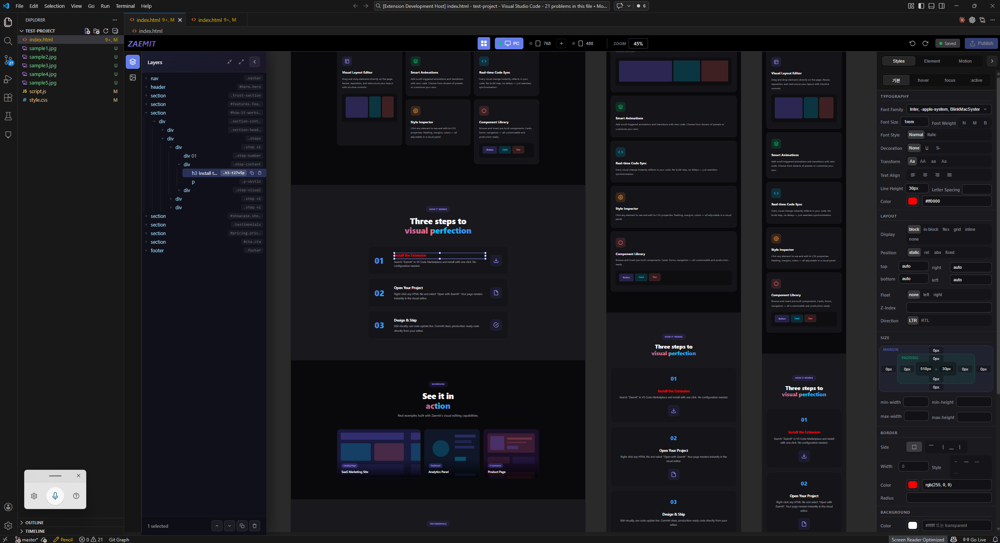

AI 대화만으로 상용 웹서비스 개발·운영
Commercial web services built through AI conversation
AI対話のみで商用ウェブサービス開発・運営
AI 웹서비스 혁신 성과 인정
Recognized for AI web innovation
AIウェブサービス革新成果認定
IR 덱, 카탈로그, 대시보드 등 바이브 코딩 제작
IR decks, catalogs, dashboards — all via Vibe Coding
IRデッキ、カタログ等バイブコーディングで制作
다양한 기관에 바이브 코딩 전파·교육
Spreading Vibe Coding through lectures
様々な機関にバイブコーディング伝播・教育
" 기술특례상장 핵심 요건 충족을 위한
IP 포트폴리오 수립전략 수행 "
" Executing IP portfolio strategy
to meet tech listing requirements "
" 技術特例上場の核心要件充足のための
IPポートフォリオ戦略遂行 "
정부공인
SW 품질인증
Gov. Certified
SW Quality
政府公認
SW品質認証
국제표준
정보보호 인증
International
InfoSec Standard
国際標準
情報保護認証
공인기관
시험성적서
Authorized
Test Report
公認機関
試験成績書
대화가 길어지면 창이 끝나고, 처음부터 다시 설명해야 합니다. 맥락이 사라집니다.
When conversations get too long, the chat ends — restart from scratch. Context is lost.
会話が長くなると途切れ、最初から説明し直す必要があります。文脈が消えます。
실제 프로젝트 파일 읽기·수정 불가 — 코드 조각을 복붙하는 것만 가능합니다.
Cannot read or modify real project files — only copy-paste code snippets.
実際のプロジェクトファイルの読み書き不可 — コード断片のコピペのみ可能です。
서버 장애, 시간당 메시지 제한, 피크 시간 접속 불가. 업무 중 갑자기 멈춥니다.
Server outages, hourly message caps, peak-time access denied. Work stops abruptly.
サーバー障害、時間当たりメッセージ制限、ピーク時アクセス不可。作業が突然止まります。
복사 → 붙여넣기 → 에러 → 재질문... 끝없는 반복에 시간만 낭비됩니다.
Copy → paste → error → re-ask... an endless cycle that wastes your time.
コピー → ペースト → エラー → 再質問...終わりのない繰り返しで時間だけ浪費します。
바이브 코딩이 이 모든 한계를 돌파합니다
Vibe Coding breaks through all these limitations
バイブコーディングがこれら全ての限界を突破します
코드가 아닌 의도와 맥락을 전달
Convey intent, not code
コードではなく意図と文脈を伝達
파일 생성·수정·실행까지 AI가 직접 수행
AI creates, modifies, and runs files
ファイル作成・修正・実行までAIが直接実行
사람은 방향 설정과 품질 검증에 집중
Humans focus on direction and quality
人間は方向設定と品質検証に集中
| ChatGPT / 일반 LLM | 바이브 코딩 | |
|---|---|---|
| 실행 환경 | 브라우저 채팅창 | 내 컴퓨터의 실제 프로젝트 |
| 파일 접근 | 불가 — 코드 조각만 제공 | 프로젝트 전체 파일 읽기/쓰기 |
| 결과물 | 텍스트 답변 (복사 필요) | 바로 실행되는 소프트웨어 |
| 반복 수정 | 복붙 → 에러 → 재질문 반복 | AI가 직접 코드 수정·실행 |
| 맥락 유지 | 대화가 길어지면 창이 끊김 — 처음부터 다시 설명 | 프로젝트 구조 전체를 항상 기억 |
| ChatGPT / General LLM | Vibe Coding | |
|---|---|---|
| Environment | Browser chat window | Real project on your machine |
| File Access | None — only code snippets | Read/write all project files |
| Output | Text answer (copy needed) | Immediately runnable software |
| Iteration | Copy→Error→Re-ask loop | AI directly edits & runs code |
| Context | Chat ends when too long — restart from scratch | Always remembers entire project |
| ChatGPT / 一般LLM | バイブコーディング | |
|---|---|---|
| 実行環境 | ブラウザのチャット画面 | 自分のPCの実プロジェクト |
| ファイル | 不可 — コード断片のみ | プロジェクト全ファイル読み書き |
| 成果物 | テキスト回答（コピー必要） | すぐ実行できるソフトウェア |
| 反復修正 | コピペ→エラー→再質問 | AIが直接コードを修正・実行 |
| 文脈維持 | 会話が長くなると途切れる — 最初から説明し直し | プロジェクト構造全体を常に記憶 |
복붙하는 순간 AI가 프로젝트 전체 맥락을 잃습니다
AI loses all project context the moment you copy-paste
コピペした瞬間AIがプロジェクト全体の文脈を失います
10개 파일을 바꿔야 하는데 AI는 1개만 답변합니다
Needs 10 file changes but AI answers for just one
10ファイルの変更が必要なのにAIは1つだけ回答します
내 환경과 다른 코드를 생성합니다
Generated code doesn't match your environment
自分の環境と異なるコードが生成されます
에러 → 재질문 → 에러... 끝없는 반복
Error → re-ask → error... an endless cycle
エラー → 再質問 → エラー...終わりなき繰り返し
여러 AI 에이전트가 동시에 프론트엔드, 백엔드, 테스트를 각각 담당하며 협업합니다
Multiple AI agents work simultaneously — each handling frontend, backend, and testing in parallel
複数のAIエージェントが同時にフロント・バックエンド・テストを各担当し協業
기존 방식으로 8년이 걸릴 프로젝트를 AI 에이전트와 함께 단 8일 만에 완성한 실제 사례
A real case where a project that would take 8 years was completed in just 8 days with AI agents
従来8年かかるプロジェクトをAIエージェントと共にわずか8日で完成した実例
하나의 프로젝트에 여러 세션을 열어 각기 다른 기능을 동시에 개발 — 병렬 작업의 극대화
Open multiple sessions on one project, developing different features simultaneously — maximized parallelism
一つのプロジェクトに複数セッションを開き異なる機能を同時開発 — 並列作業の極大化
AI가 단순 도구가 아닌 팀원으로 동작 — 코드 리뷰, 테스트 작성, 리팩토링을 자율적으로 수행
AI operates as a team member, not just a tool — autonomously reviewing, testing, and refactoring
AIが単なるツールではなくチームメンバーとして動作 — レビュー・テスト・リファクタリングを自律実行
"무엇을 만들고 싶은지"를 자연어로 설명합니다. 코드가 아닌 목적과 맥락을 전달합니다.
Describe "what you want to build" in natural language. Convey purpose and context, not code.
「何を作りたいか」を自然言語で説明します。コードではなく目的と文脈を伝えます。
AI가 기존 프로젝트를 분석하고, 최적의 구현 방법을 스스로 설계합니다.
AI analyzes existing project and designs the optimal implementation approach.
AIが既存プロジェクトを分析し、最適な実装方法を自ら設計します。
파일을 생성·수정하고, 에러가 나면 스스로 디버깅하여 해결합니다.
Creates and modifies files, self-debugging errors as they arise.
ファイルを生成・修正し、エラーが出れば自らデバッグして解決します。
결과를 확인하고, 수정 사항을 다시 자연어로 전달합니다. 이 사이클을 반복합니다.
Review results and convey corrections in natural language. Repeat this cycle.
結果を確認し、修正事項を再び自然言語で伝えます。このサイクルを繰り返します。
| 전통 개발 | AI 대화 | 바이브 코딩 | |
|---|---|---|---|
| 입력 | 프로그래밍 언어 | 질문/프롬프트 | 의도와 맥락 |
| 출력 | 실행 가능한 코드 | 텍스트 답변 | 동작하는 소프트웨어 |
| AI 역할 | 보조 도구 | 답변자 | 실행자 / 협업자 |
| 필요 역량 | 코딩 전문 지식 | 좋은 질문 능력 | 의도 설계 능력 |
| 결과물 수준 | 전문가 수준 | 참고 자료 | 상용 가능 제품 |
| 진입장벽 | 매우 높음 | 낮음 | 낮음 |
| Traditional Dev | AI Chat | Vibe Coding | |
|---|---|---|---|
| Input | Programming language | Questions/Prompts | Intent & Context |
| Output | Executable code | Text answers | Working software |
| AI Role | Assistive tool | Answerer | Executor / Collaborator |
| Required Skill | Coding expertise | Good questions | Intent design |
| Output Level | Expert-level | Reference material | Production-ready |
| Barrier to Entry | Very high | Low | Low |
| 従来の開発 | AI対話 | バイブコーディング | |
|---|---|---|---|
| 入力 | プログラミング言語 | 質問/プロンプト | 意図と文脈 |
| 出力 | 実行可能なコード | テキスト回答 | 動作するソフトウェア |
| AIの役割 | 補助ツール | 回答者 | 実行者 / 協力者 |
| 必要な能力 | コーディング専門知識 | 良い質問力 | 意図設計能力 |
| 成果物レベル | 専門家レベル | 参考資料 | 商用可能な製品 |
| 参入障壁 | 非常に高い | 低い | 低い |
| 노코드 플랫폼 | 바이브 코딩 | |
|---|---|---|
| 커스터마이징 | 템플릿 범위 내 제한적 | 무한대 — 코드 레벨 자유 |
| 확장성 | 플랫폼 기능 한도 내 | 제한 없음 — 어떤 기능이든 |
| 비용 구조 | 월 구독료 (기능별 과금) | AI 사용료만 (보통 $20/월) |
| 소유권 | 플랫폼 종속 (lock-in) | 소스 코드 100% 소유 |
| 학습 곡선 | 각 플랫폼별로 별도 학습 | 자연어 — 도구 하나로 통일 |
| No-Code Platforms | Vibe Coding | |
|---|---|---|
| Customization | Limited to templates | Unlimited — code-level freedom |
| Scalability | Within platform limits | No limits — any feature |
| Cost Structure | Monthly subscription | AI usage only (~$20/mo) |
| Ownership | Platform lock-in | 100% source code ownership |
| Learning Curve | Learn each platform | Natural language — one tool |
| ノーコードプラットフォーム | バイブコーディング | |
|---|---|---|
| カスタマイズ | テンプレート範囲内 | 無制限 — コードレベルの自由 |
| 拡張性 | プラットフォーム機能内 | 制限なし — どんな機能でも |
| 費用構造 | 月額サブスク（機能別課金） | AI使用料のみ（通常$20/月） |
| 所有権 | プラットフォーム依存 | ソースコード100%所有 |
| 学習曲線 | 各プラットフォーム個別学習 | 自然言語 — ツール1つに統一 |
특허 심사관은 특허 프로세스를, 의사는 진료 워크플로우를 가장 잘 압니다. 이 전문 지식이 곧 "최고의 프롬프트"입니다.
Patent examiners know the patent process best. Doctors know clinical workflows best. This domain knowledge becomes the "best prompt."
特許審査官は特許プロセスを、医師は診療ワークフローを最もよく知っています。この専門知識が「最高のプロンプト」になります。
개발자는 기술 중심으로 생각하지만, 비개발자는 사용 경험 중심으로 생각합니다. 결과적으로 더 직관적인 도구를 만들어냅니다.
Developers think technology-first, but non-developers think experience-first. The result is more intuitive tools.
開発者は技術中心で考えますが、非開発者は使用体験中心で考えます。結果的により直感的なツールを作り出します。
"원래 이건 어렵다"는 기술적 선입견이 없기에, 오히려 대담한 요구를 합니다. AI는 그 대담한 요구를 실현해줍니다.
Without the "this is technically hard" bias, non-developers make bolder requests. AI can fulfill those bold demands.
「これは技術的に難しい」という先入観がないため、大胆な要求をします。AIはその大胆な要求を実現してくれます。
선행 기술 검색 결과를 자동 분류하고, 청구항 유사도를 시각화하는 도구를 직접 구축. 외주 비용 수천만 원 절감.
Built a tool to auto-classify prior art search results and visualize claim similarity. Saved tens of thousands in outsourcing costs.
先行技術検索結果を自動分類し、請求項の類似度を可視化するツールを自ら構築。外注費用を数千万ウォン削減。
진료 기록을 음성으로 입력하면 자동으로 정리되는 도구. 하루 1시간 서류 작업 시간 절감. 본인이 가장 잘 아는 워크플로우.
A tool that auto-organizes patient records from voice input. Saves 1 hour/day of paperwork. Built by someone who knows the workflow best.
診療記録を音声入力で自動整理するツール。1日1時間の書類作業を削減。自分が最もよく知るワークフロー。
논문 데이터를 자동 크롤링·분석하는 도구, 학생 과제 관리 시스템, 연구 데이터 시각화 대시보드를 직접 구축.
Built paper data auto-crawling tools, student assignment management, and research data visualization dashboards.
論文データの自動クローリング・分析ツール、学生課題管理システム、研究データ可視化ダッシュボードを自ら構築。
대시보드, 관리 시스템, SaaS 제품
Dashboards, admin systems, SaaS products
ダッシュボード、管理システム、SaaS製品
차트, 그래프, 인터랙티브 리포트
Charts, graphs, interactive reports
チャート、グラフ、インタラクティブレポート
IR 덱, 보고서, 프레젠테이션 생성
IR decks, reports, presentations
IRデッキ、レポート、プレゼンテーション
반복 업무 처리, 데이터 변환, 배치 작업
Repetitive tasks, data transforms, batch jobs
繰り返し業務処理、データ変換、バッチ作業
아이디어 검증용 빠른 시제품
Quick prototypes for idea validation
アイデア検証用の高速試作品
외부 서비스 연동, 챗봇, 알림 시스템
External service integrations, chatbots, alerts
外部サービス連動、チャットボット、通知
| 작업 | 기존 방식 | 바이브 코딩 | 배수 |
|---|---|---|---|
| MVP 프로토타입 | 3~6개월 | 1~3일 | ~60x |
| 웹사이트 구축 | 2~4주 | 2~4시간 | ~40x |
| 데이터 대시보드 | 1~2주 | 30분~2시간 | ~30x |
| 자동화 스크립트 | 1~2일 | 5~15분 | ~20x |
| 이 발표자료 (50장) | 외주 2주+ | 하루 | ~14x |
| Task | Traditional | Vibe Coding | Speedup |
|---|---|---|---|
| MVP Prototype | 3-6 months | 1-3 days | ~60x |
| Website Build | 2-4 weeks | 2-4 hours | ~40x |
| Data Dashboard | 1-2 weeks | 30min-2hrs | ~30x |
| Automation Script | 1-2 days | 5-15 min | ~20x |
| This Deck (50 slides) | 2+ weeks outsourced | 1 day | ~14x |
| 作業 | 従来方式 | バイブコーディング | 倍率 |
|---|---|---|---|
| MVPプロトタイプ | 3〜6ヶ月 | 1〜3日 | ~60x |
| ウェブサイト構築 | 2〜4週 | 2〜4時間 | ~40x |
| データダッシュボード | 1〜2週 | 30分〜2時間 | ~30x |
| 自動化スクリプト | 1〜2日 | 5〜15分 | ~20x |
| この資料（50枚） | 外注2週間以上 | 1日 | ~14x |

"이 프로젝트는 HTML 슬라이드 시스템이고, 다크 테마를 사용하며, 뷰포트는 1280px 고정이다."
"This project is an HTML slide system, uses dark theme, and viewport is fixed at 1280px."
「このプロジェクトはHTMLスライドシステムで、ダークテーマを使用し、ビューポートは1280px固定である。」
"폰트 크기는 18px 이상, 이모지 금지, 3개 국어 필수, Lucide SVG만 사용."
"Font size min 18px, no emoji, trilingual required, Lucide SVG icons only."
「フォントサイズ最小18px、絵文字禁止、3カ国語必須、Lucide SVGのみ使用。」
이후 모든 작업에서 AI가 규칙을 읽고 자동으로 따릅니다. 실수하면 스스로 검증하고 수정합니다.
AI reads and follows rules in all subsequent tasks automatically. If it makes a mistake, it self-verifies and corrects.
以降すべての作業でAIがルールを読み自動的に守ります。ミスがあれば自ら検証し修正します。
이 50장의 발표자료 전체가 CLAUDE.md 규칙 파일 하나와 바이브 코딩으로 만들어졌습니다.
These entire 50 slides were created with one CLAUDE.md rules file and Vibe Coding.
この50枚の資料全体がCLAUDE.mdルールファイル1つとバイブコーディングで作られました。
키워드 기반 자동 검색, 결과 분류, 유사도 순위 정렬 도구
Auto-search by keyword, classify results, rank by similarity
キーワード基盤自動検索、結果分類、類似度順位ソートツール
두 특허 문서의 청구항을 나란히 비교, 차이점 하이라이트
Side-by-side claim comparison with highlighted differences
2つの特許文書の請求項を並べて比較、差異をハイライト
심사 진행 현황, 기한 알림, 통계 시각화 대시보드
Review status tracking, deadline alerts, statistics visualization
審査進行状況、期限アラート、統計可視化ダッシュボード
전통 개발로 수일 걸릴 작업을 수십 분 안에 완성했습니다. 10배 이상의 속도 차이입니다.
What would take days in traditional dev was completed in minutes. A 10x+ speed difference.
従来の開発で数日かかる作業を数十分で完成しました。10倍以上の速度差です。
코딩 지식이 아닌 "무엇을 원하는지 설명하는 능력"만 사용했습니다. 자연어가 프로그래밍 언어가 되었습니다.
Only "ability to explain what you want" — no coding knowledge. Natural language became the programming language.
コーディング知識ではなく「何を望むか説明する能力」だけを使いました。自然言語がプログラミング言語になりました。
실제로 동작하는 완성품이 나왔습니다. 참고용 코드 조각이 아닌 "상용 가능한 소프트웨어"입니다.
A fully working product emerged. Not reference code snippets, but "production-ready software."
実際に動作する完成品が出来ました。参考用コード断片ではなく「商用可能なソフトウェア」です。
마케팅 출신 대표가 AI로 MVP를 제작, VC 투자 유치에 성공. 개발팀 없이 시리즈A까지 진행 중인 사례가 등장하고 있습니다.
A marketing-background CEO built an MVP with AI and secured VC funding. Cases of reaching Series A without dev teams are emerging.
マーケティング出身の代表がAIでMVPを制作、VC投資誘致に成功。開発チームなしでシリーズAまで進行する事例が登場しています。
계약서 자동 검토 도구, 판례 검색 시스템, 의뢰인 관리 대시보드를 직접 구축하여 업무 효율을 혁신적으로 개선하고 있습니다.
Building contract review tools, case law search systems, and client dashboards — dramatically improving work efficiency.
契約書自動レビューツール、判例検索システム、依頼人管理ダッシュボードを直接構築して業務効率を革新的に改善しています。
맞춤형 퀴즈 앱, 데이터 분석 도구, 학생 관리 시스템을 제작. 각 분야의 도메인 전문성이 곧 기술력이 됩니다.
Creating custom quiz apps, data analysis tools, student management systems. Domain expertise becomes technical capability.
カスタムクイズアプリ、データ分析ツール、学生管理システムを制作。各分野のドメイン専門性がそのまま技術力になります。
외래 진료 기록을 자동 요약하고 보험 청구 코드를 추천하는 도구. 하루 2시간 서류 작업 시간 절감. 환자와 대화하는 시간이 늘었습니다.
Auto-summarizes outpatient records and recommends insurance codes. Saves 2 hours/day of paperwork. More time with patients.
外来診療記録を自動要約し保険請求コードを推薦するツール。1日2時間の書類作業を削減。患者との対話時間が増えました。
템플릿이 아닌 완전 커스텀 포트폴리오 사이트. 3D 효과, 스크롤 애니메이션, 다크모드까지. "Wix로는 절대 불가능했을 것"이라고 말합니다.
A fully custom portfolio site — not a template. 3D effects, scroll animations, dark mode. "Wix could never do this," they say.
テンプレートではない完全カスタムポートフォリオサイト。3Dエフェクト、スクロールアニメーション、ダークモードまで。「Wixでは絶対無理だった」と。
연간 수만 건의 민원 데이터를 자동 분류·분석하는 대시보드 구축. 반복 민원 패턴을 발견하고 선제적 대응 체계를 마련했습니다.
Built a dashboard to auto-classify and analyze tens of thousands of annual complaints. Discovered repeat patterns and established proactive response.
年間数万件の民願データを自動分類・分析するダッシュボードを構築。繰り返しパターンを発見し先制的対応体系を整えました。
"무엇을 왜 만들고 싶은가"를 명확하게 전달하는 능력. 요구사항을 구조화하고 우선순위를 정합니다.
The ability to clearly communicate "what and why." Structuring requirements and setting priorities.
「何をなぜ作りたいか」を明確に伝える能力。要件を構造化し優先順位をつけます。
AI가 프로젝트를 이해할 수 있도록 적절한 맥락을 제공하고, 대화의 흐름을 관리합니다.
Providing proper context for AI to understand the project and managing conversation flow.
AIがプロジェクトを理解できるよう適切な文脈を提供し、会話の流れを管理します。
AI의 결과물을 실행하고, 의도한 대로 동작하는지 확인하며, 피드백을 주는 능력입니다.
Running AI's output, verifying it works as intended, and providing feedback.
AIの成果物を実行し、意図通りに動作するか確認し、フィードバックを与える能力です。
GitHub Copilot만 200만 유료 사용자 돌파 (2025). Claude Code, Cursor 등 경쟁 도구까지 합하면 수배 규모.
GitHub Copilot alone surpassed 2M paid users (2025). Including Claude Code, Cursor and others, the total is many times larger.
GitHub Copilotだけで200万有料ユーザー突破（2025）。Claude Code、Cursor等を含めると数倍規模。
AI 코딩 어시스턴트 시장은 2027년까지 $30B 규모로 성장 전망. 연 60%+ CAGR로 폭발적 성장 중.
AI coding assistant market projected to reach $30B by 2027. Growing at 60%+ CAGR — explosive expansion.
AIコーディングアシスタント市場は2027年までに$30B規模に成長見込み。年60%+のCAGRで爆発的成長中。
Stack Overflow 2025 조사: 개발자 76%가 AI 코딩 도구를 사용 중이거나 도입 예정. 더 이상 선택이 아닌 필수.
Stack Overflow 2025 survey: 76% of developers are using or plan to use AI coding tools. No longer optional — it's essential.
Stack Overflow 2025調査：開発者の76%がAIコーディングツールを使用中または導入予定。もはや選択ではなく必須。
소프트웨어 특허에 개발팀이 필수였던 시대가 끝납니다. 아이디어 보유자가 직접 프로토타입을 제작할 수 있습니다.
The era when dev teams were essential for software patents is ending. Idea holders can now build prototypes directly.
ソフトウェア特許に開発チームが必須だった時代が終わります。アイデア保有者が直接プロトタイプを制作できます。
기술 구현 비용이 0에 수렴하면서, 특허 출원 주체가 기업에서 개인으로 다양화됩니다.
As implementation costs approach zero, patent filers diversify from companies to individuals.
技術実装コストがゼロに収束し、特許出願主体が企業から個人へ多様化します。
특허 출원 전 Proof of Concept 제작이 수일에서 수시간으로 단축됩니다. 실증이 빨라집니다.
Pre-patent PoC creation shrinks from days to hours. Validation accelerates dramatically.
特許出願前のPoC制作が数日から数時間に短縮されます。実証が高速化します。
AI가 생성한 코드의 저작자는 사용자인가, AI인가, AI 개발사인가? 각국의 판례와 가이드라인이 다릅니다.
Is the author the user, the AI, or the AI developer? Precedents and guidelines differ by country.
AI生成コードの著作者はユーザーか、AIか、AI開発会社か？各国の判例とガイドラインが異なります。
AI 도움으로 만든 발명의 진보성(inventive step)을 어떻게 평가할 것인가? 특허 심사의 새로운 과제입니다.
How to evaluate inventive step of AI-assisted inventions? A new challenge for patent examination.
AI支援で作られた発明の進歩性をどう評価するか？特許審査の新たな課題です。
USPTO, EPO, JPO, KIPO 각각이 AI 발명 관련 가이드라인을 발표하고 있으며, 기준이 빠르게 변화하고 있습니다.
USPTO, EPO, JPO, KIPO are each publishing AI invention guidelines, and standards are evolving rapidly.
USPTO、EPO、JPO、KIPOがそれぞれAI発明関連ガイドラインを発表しており、基準が急速に変化しています。
AI는 발명자가 될 수 없으나, AI를 도구로 사용한 발명은 인정. "상당한 인간 기여" 기준 적용 중.
AI cannot be an inventor, but inventions using AI as a tool are recognized. "Significant human contribution" standard applies.
AIは発明者になれないが、AIをツールとして使用した発明は認定。「相当な人間の貢献」基準を適用中。
DABUS 사건에서 AI 발명자를 거부. 다만 AI 보조 발명의 특허성은 별도 판단하는 이원적 접근.
Rejected AI inventor in DABUS case. However, patentability of AI-assisted inventions is evaluated separately.
DABUS事件でAI発明者を拒否。ただしAI支援発明の特許性は別途判断する二元的アプローチ。
AI 활용 발명에 대해 상대적으로 유연한 태도. 발명 과정에서의 인간 관여도를 단계적으로 평가.
Relatively flexible stance on AI-assisted inventions. Evaluates human involvement progressively.
AI活用発明に対して比較的柔軟な態度。発明過程における人間の関与度を段階的に評価。
AI 관련 특허 심사 기준 마련 중. 바이브 코딩 시대에 발맞춘 새로운 기준이 필요한 상황입니다.
Developing AI patent examination standards. New criteria aligned with the Vibe Coding era are needed.
AI関連特許審査基準を策定中。バイブコーディング時代に合わせた新たな基準が必要な状況です。
AI는 존재하지 않는 API, 라이브러리, 함수를 자신있게 제시합니다. 코드가 그럴듯해 보여도 실행하면 에러 — 반드시 테스트로 검증하세요.
AI confidently presents non-existent APIs, libraries, and functions. Code may look plausible but fails on execution — always verify by testing.
AIは存在しないAPI・ライブラリ・関数を自信を持って提示します。もっともらしく見えても実行するとエラー — 必ずテストで検証してください。
AI 생성 코드에 SQL 인젝션, XSS, 하드코딩된 API 키 등 보안 구멍이 포함될 수 있습니다. 배포 전 보안 감사와 코드 리뷰는 필수입니다.
AI-generated code may contain SQL injection, XSS, or hardcoded API keys. Security audits and code reviews before deployment are essential.
AI生成コードにSQLインジェクション、XSS、ハードコードされたAPIキー等の脆弱性が含まれる可能性があります。配布前の監査とレビューは必須です。
수십만 줄 레거시 코드, 복잡한 마이크로서비스, 실시간 트랜잭션은 AI 컨텍스트 한계를 초과합니다. 전체 아키텍처 파악이 필요한 작업에는 한계가 있습니다.
Massive legacy codebases, complex microservices, and real-time transactions exceed AI context limits. Tasks requiring full architecture comprehension remain challenging.
数十万行のレガシーコード、複雑なマイクロサービス、リアルタイムトランザクションはAIのコンテキスト限界を超えます。全体アーキテクチャ把握が必要な作業には限界があります。
AI 코드를 이해하지 않고 쓰면 버그 수정과 기능 확장이 불가능해집니다. "이 코드가 왜 이렇게 동작하는지" 항상 물어보는 습관이 핵심입니다.
Using AI code without understanding it makes debugging and extending impossible. Building the habit of asking "why does this work this way" is the key.
AIコードを理解せず使うとバグ修正と機能拡張が不可能になります。「なぜこう動くのか」を常に問いかける習慣が重要です。
한계를 아는 것이 제대로 활용하는 첫걸음입니다
Knowing the limits is the first step to using it right
限界を知ることが正しく活用する第一歩です
API 키, 비밀번호, 인증 토큰은 절대 코드에 직접 넣지 않습니다. .env 파일로 분리하고 .gitignore에 등록합니다.
Never put API keys, passwords, or auth tokens directly in code. Separate into .env files and add to .gitignore.
APIキー・パスワード・認証トークンは絶対にコードに直接入れません。.envファイルに分離し.gitignoreに登録します。
조직 도입 시 엔터프라이즈 플랜을 선택하면 데이터가 AI 학습에 사용되지 않음을 계약으로 보장받습니다.
Enterprise plans contractually guarantee your data won't be used for AI training when adopted organizationally.
組織導入時にエンタープライズプランを選択するとデータがAI学習に使用されないことが契約で保証されます。
AI가 생성한 코드도 반드시 사람이 검토합니다. 특히 인증·결제·데이터 처리 코드는 보안 전문가 리뷰를 거칩니다.
AI-generated code must be reviewed by humans. Auth, payment, and data processing code requires security expert review.
AI生成コードも必ず人がレビューします。特に認証・決済・データ処理コードはセキュリティ専門家のレビューを経ます。
개인정보·내부 문서·기밀 데이터는 AI 프롬프트에 포함하지 않습니다. 테스트용 더미 데이터를 사용합니다.
Don't include personal info, internal docs, or confidential data in AI prompts. Use dummy data for testing.
個人情報・内部文書・機密データはAIプロンプトに含めません。テスト用ダミーデータを使用します。
VS Code를 설치하고, Claude Code 확장을 추가합니다. 모두 무료로 시작할 수 있습니다.
Install VS Code and add the Claude Code extension. Everything is free to start.
VS Codeをインストールし、Claude Code拡張機能を追加します。すべて無料で始められます。
업무에서 반복적으로 하는 단순 작업 하나를 자동화하는 도구를 만들어 보세요.
Try building a tool that automates one repetitive task from your daily work.
業務で繰り返し行う単純作業を自動化するツールを作ってみてください。
성공 경험을 바탕으로 더 복잡한 프로젝트에 도전합니다. 데이터 시각화, 웹 앱 등.
Build on your success with more complex projects: data visualization, web apps, and more.
成功体験を基に、より複雑なプロジェクトに挑戦します。データ可視化、ウェブアプリ等。
매일/매주 반복하는 업무 중 자동화하고 싶은 것은 무엇인가요? 서류 작성, 데이터 정리, 보고서 생성 등
What daily/weekly tasks would you automate? Document creation, data organization, report generation, etc.
毎日/毎週繰り返す業務で自動化したいものは？書類作成、データ整理、報告書作成など
"이런 도구가 있었으면..." 하고 생각한 적이 있나요? 기존 도구에서 부족한 점은 무엇인가요?
Have you ever thought "I wish there was a tool for..."? What's missing from existing tools?
「こんなツールがあれば...」と思ったことはありますか？既存ツールの不足な点は？
오늘 강의에서 본 사례들을 떠올려보세요. 여러분의 아이디어도 충분히 만들 수 있습니다!
Remember the examples from today's lecture. Your ideas are absolutely buildable too!
今日の講義で見た事例を思い出してください。皆さんのアイデアも十分に作れます！
claude.ai 체험 → VS Code 설치 → Cursor 또는 Claude Code 체험 → 간단한 웹페이지 만들기
Try claude.ai → Install VS Code → Try Cursor or Claude Code → Build a simple webpage
claude.ai体験 → VS Codeインストール → CursorまたはClaude Code体験 → 簡単なWebページ作成
Claude Code로 실제 프로젝트 진행 → GitHub으로 버전 관리 → CLAUDE.md 활용 → 업무 도구 제작
Real project with Claude Code → GitHub version control → Use CLAUDE.md → Build work tools
Claude Codeで実際のプロジェクト → GitHubでバージョン管理 → CLAUDE.md活用 → 業務ツール制作
API 연동 서비스 구축 → 데이터베이스 활용 → 배포와 운영 → 팀 프로젝트 협업
Build API-integrated services → Use databases → Deploy and operate → Team collaboration
API連動サービス構築 → データベース活用 → デプロイと運用 → チームプロジェクト協業
김정환 · WEVEN 대표이사
Junghwan Kim · CEO, WEVEN Inc.
金正煥 · WEVEN 代表取締役